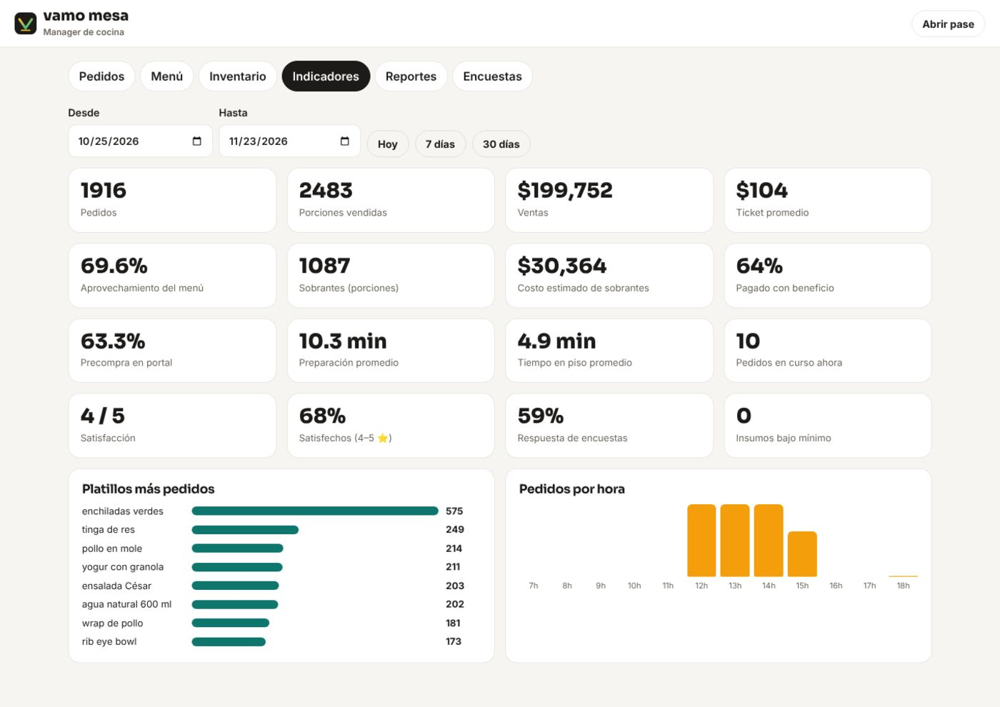
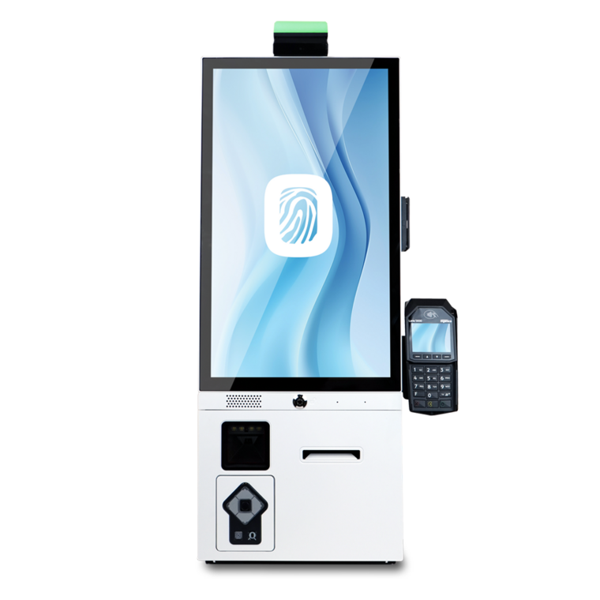

Propuesta de solución · Newrest México
Comedores corporativos
sin filas ni desperdicio.
Vamo Mesa para la operación de Newrest en las oficinas corporativas de Nike.
VAMO MESA · familia Vamo · noviembre 2026

Para quién lo diseñamos
Newrest México
0
alimentos servidos diariamente
Business & Industry desde 2025, sobre su operación de catering aéreo en México desde 1998.
ISO 9001Distintivo HESREcoVadisCatering Unlimited
Fuente: newrest.eu/es/nuestra-red/mexico
El reto
Un comedor corporativo pierde dinero y confianza en cinco lugares
⏳Filas en hora pico
Todos llegan entre 13:00 y 14:30.
🗑️Producción a ciegas
Merma o platillos agotados.
💳Beneficio manual
Vales y listas difíciles de auditar.
📦Inventario desconectado
Faltantes que se descubren tarde.
🤷Satisfacción sin datos
La queja llega antes que el dato.
💡Lo que pide el cliente
Reportes de consumo, tiempos y satisfacción.
La solución
Vamo Mesa conecta al colaborador, la cocina y la administración
🗓️Portal de menú
Día o semana, porciones, premium y grab & go.
📱Precompra
Desde el celular o la web, con su beneficio.
🖐️Kiosco táctil
Beneficio, tarjeta o NFC en sitio.
👩🍳Manager de cocina
Pedidos en vivo e inventario con recetas.
🧾Pase con o sin papel
Ticket térmico o tablero táctil.
📊Satisfacción e indicadores
Encuesta por correo y KPIs en vivo.
Experiencia del colaborador
Del menú a la mesa en cinco pasos
1Ve el menú de la semanaPorciones, kcal y precio.
2Aparta y paga con su beneficioLo premium o el excedente, con tarjeta.
3Recibe su códigoLa cocina lo ve al instante.
4Recoge cuando está listoSin fila: la pantalla de salida lo avisa.
5Califica su comidaEncuesta de 30 segundos por correo.

Precompra y kiosco
Dos canales, un solo inventario

Portal web: menú de la semana y pago con beneficio.

Kiosco: número de empleado + NIP, o tarjeta.
Capturas del demo en vivo
Cocina y operación
Todo lo que se pide y se pidió, en vivo

- Tablero táctil de pase con alerta de demoras
- Ticket de 80 mm con impresión automática
- Menú por formulario o CSV
- Inventario con recetas, entradas y mermas
- Cancelaciones que regresan beneficio e inventario
Indicadores de gestión
Decisiones con datos, por comedor y por día

Aprovechamiento
Vendido vs. planeado y costo de sobrantes.
Tiempos
Preparación y tiempo en piso.
Beneficio
Uso vs. tarjeta y ticket promedio.
Satisfacción
Calificación y respuesta.
Demanda
Platillos y horas pico.
Reportes
CSV para ERP o nómina.
Voz del comensal
Cada comida termina con una pregunta
📧Encuesta por correo
Al entregar el pedido.
⭐30 segundos
Qué le gustó, qué no y qué mejorar.
🔁Directo a la cocina
Por platillo y por área.
Para Newrest: evidencia de calidad ante el cliente y alertas antes de que una queja escale.
Equipo en sitio
Kiosco Summit y pantallas de servicio


- Pago cashless: tarjeta, celular o reloj por NFC
- Lector de QR para recoger o identificarse
- Fila rápida para quien apartó
- Pantalla de pase, pantalla de salida e impresora térmica
Imágenes del kiosco Summit cortesía de Touch Dynamic, aliado de hardware de Vamo.
Modalidades de adquisición
Compra total o leasing por equipo
| Compra total | Leasing por equipo Recomendado |
|---|
| Inversión inicial | Desembolso completo (CAPEX) | Sin inversión inicial: renta mensual (OPEX) |
| Escalamiento | Cada sitio es una nueva compra | Se agregan o retiran equipos por comedor |
| Mantenimiento | Después de la garantía, a cargo de Newrest | Mantenimiento, reemplazo y soporte incluidos |
| Renovación | El equipo envejece en el balance | Renovación al término del plazo |
| Contratos | El activo sobrevive al contrato | El plazo empata con el contrato del comedor |
| Contabilidad | Activo que se deprecia | Suele registrarse como gasto operativo (validar con fiscal) |
La propuesta económica se presenta en una siguiente etapa.
Seguridad, privacidad y nube
Cumplimiento total, en la nube del cliente
🔒 Privacidad de datos
- Ley Federal de Protección de Datos Personales: aviso y consentimiento
- Sólo número de empleado, área y correo
- Cifrado, acceso por roles y bitácoras
- Pagos vía procesador certificado PCI DSS
☁️ Integrado a su nube
- Azure, AWS o Google Cloud del cliente
- Inicio de sesión único con su directorio
- Beneficio conectado a nómina o vales
- Reportes hacia ERP y BI vía API
Cómo lo desplegamos
Empezamos en un comedor, escalamos a la red
1 · Diagnóstico
Visita al comedor de Nike, menú, recetas, beneficio e integraciones.
2 · Piloto
Instalación, capacitación y línea base: filas, mermas, tiempos y satisfacción.
3 · Escalamiento
Réplica en la red Newrest con tablero comparativo por sitio.
Demo en vivo

cotizador.menteia.com/mesa
- Portal del colaborador (10021 a 10028, NIP 1234)
- Kiosco táctil
- Manager de cocina con indicadores
- Pase sin papel y pantalla de salida
Comedor de ejemplo con datos ficticios.
Próximos pasos
Hagamos el piloto en el comedor de Nike
- Visita técnica al comedor corporativo
- Definir la modalidad (recomendamos leasing por equipo)
- Alcance de integraciones: nube, inicio de sesión, beneficio y ERP
- Propuesta económica y calendario del piloto
GRACIAS · VAMO MESA